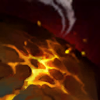

核心裝備
 奪魄之鐮
奪魄之鐮 磁性雷射槍
磁性雷射槍 無盡之刃
無盡之刃 致死宣告
致死宣告 嗜血者
嗜血者

以下為本站 7.2d 校正後的標準配置；實戰仍需依敵方陣容調整。


技能優先：Q > E > W
普攻傷害轉為混合傷害；週期性可取得特殊補給，大幅強化下一次女武神特攻。
投擲磷光炸彈造成範圍魔法傷害並短暫揭露區域。

向前飛行並留下燃燒地帶造成持續傷害；特殊補給版本距離與控制效果更強。
向前方持續掃射，造成混合傷害並降低敵人的物防與魔防。
發射可儲存的導彈造成範圍傷害；每隔數發會變成威力與範圍更大的超級導彈。
4技火箭 → 1技炸彈 → 普攻 → 3技掃射
先以火箭逼走位，再用一技與普攻補傷害；能安全貼近時才開三技削防。
強化2技進場 → 3技掃射 → 1技 → 4技收尾
從側翼用炸彈包裹把敵方陣型切開，落地後快速補上削防與範圍傷害，不要停在敵方中心。
1技 → 4技超級導彈 → 普攻 → 2技後撤
一技與超級導彈快速壓低血量，普攻後立即用二技退出反打範圍。
用一技與普攻穩定清線，三技持續掃射能降低雙防，但不要為了打滿傷害走進刺客的貼身範圍。二技主要用來保命，沒有視野時避免主動向前使用。
大絕火箭累積後先在物件前消耗，超級導彈留給敵方後排或狹窄入口。取得炸彈包裹後先處理兵線，再從側面切割戰場，不要正面衝入完整控制鏈。
保持射手站位，以火箭和一技持續磨血，開戰後用三技削弱前排雙防。包裹可以分割陣型或逼退核心，使用後立刻回到安全輸出距離。
對局名單是本站依英雄機制與目前配置整理的參考，不等同固定勝率。
中路優先處理爆發、控制與抗性問題；標準輸出核心不因單一威脅整套推翻。
觸發：對線或團戰有能直接貼近你的刺客／爆發核心，常在完成第一輪輸出前死亡。
守護天使提供物防與復活，適合把最後一個純輸出位換成容錯。
魔提斯深淵提供魔防與低血量魔法護盾，比單純增加輸出更能保住進場或持續輸出。
觸發：敵方有多個關鍵硬控，會讓你無法安全站位或施放完整連段。
先購買水銀飾帶取得主動解控，之後再合成水星彎刀；水銀飾帶是合成組件，不是另一件要與水星彎刀互換的成裝。
犧牲部分輸出型傳奇符文，換取韌性與緩速抗性。
觸發：敵方前排多，團戰需要你持續處理高生命目標，而不是只秒後排。
把後期彈性位換成更有效的百分比穿透、削甲或高生命目標傷害。
觸發：敵方治療、吸血或回復讓你的消耗與爆發很難真正壓低血線。
標準配置已有重創，不需要再換。
觸發：敵方核心已經針對你的主要傷害類型堆高物防或魔防。
你不是隊伍主要穿透來源，或標準配置已經有足夠百分比穿透／削抗。
提醒：「坦克多」看的是高生命前排；「抗性高」則是對方已經明確堆高物防／魔防，兩種情境不一定相同。
7.2a 中路第二批正式版：技能名稱與核心機制依 Riot Games 台灣《激鬥峽谷》官方英雄頁校正；版本基準採官方 7.2 與 7.2a 更新公告。Tier、出裝、符文、對局與實戰節奏為本站依中路環境整理的綜合配置。｜v60：完整套用阿璃中路固定母版。
本站於 2026-08-27 依 Patch 7.2d 重新檢查此配置。 Tier、出裝、符文與對局屬於 Wild Rift Guide 的整理與分析，不是 Riot Games 官方推薦；版本改動後會再依官方公告與實戰資料校正。